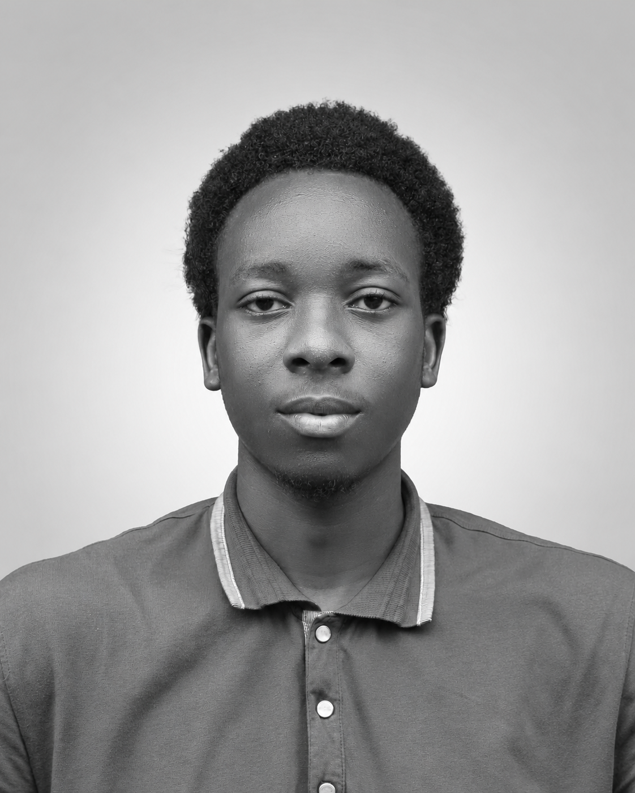

Mitchel Azuonye Sunday | WDD 130
My name is Mitchel, and I am a Nigerian with a strong interest in technology, education, and personal development. I am currently pursuing my education through BYU-Pathway Worldwide while developing practical skills that can help me build a successful career. I have a growing interest in programming, particularly Python, data analysis, and UI/UX design. I also explore graphic design, freelancing, and digital opportunities that can help me become financially independent. I enjoy learning new things, taking on challenges, and working on creative projects. I am particularly interested in improving my technical skills, building a strong professional portfolio, and gaining real-world work experience. My long-term goal is to develop valuable skills, establish a successful career in technology, and create opportunities for myself through continuous learning and hard work.
